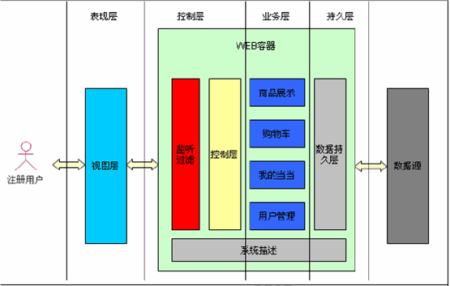
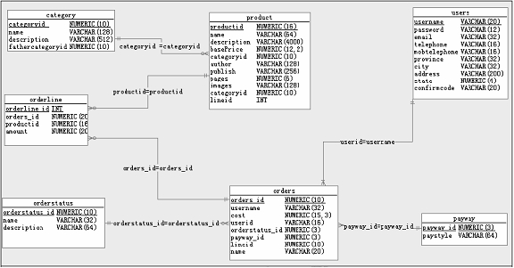

GWAP为达内TTS教程系统下的一个中期项目，以B/S架构模拟当前网络购物平台---当当网门户页面。其较为综合的融合了JAVASE基本知识，全面运用了WEB2.0新技术的标准。通过该项目的练习可使学员对于电子商务平台有初步了解，积累一定的企业级开发经验。
通用WEB应用系统，包括交易系统和管理系统两个独立的子系统，主要包括：商品展示、购物车管理、我的订单、用户管理四个功能模块。

系统基本架构

各数据表的E-R关系图
使用者在登录时会验证邮箱是否已激活，若未激活则先跳转到激活页面。这其中激活操作是通过在注册时系统会生成一激活码并发送到数据库端进行存储，用需要用这个激活码与邮箱中接收到激活码进行比照来确定激活与否。以下代码封装对激活码的一些操作：
public class VerifyUtil {
/**
* 获取Email验证码
* @param id 用户ID
* @return Email验证码
*/
public static String getEmailVerifyCode(int id){
return getUUID()+"_"+id;
}
/**
* 根据Email验证码获取UUID部分
* @param code Email验证码
* @return UUID
*/
public static String getUUID(){
UUID uuid=UUID.randomUUID();
return uuid.toString();
}
/**
* 根据Email验证码获取UserID部分
* @param code Email验证码
* @return UserID
*/
public static String getUserID(String code){
return code.substring(code.lastIndexOf("_")+1);
}
}
用户在注册时需要用ajax向服务器发送请求检查用户名是否已被占用，注册时用户需要加密处理才写入数据库中.
public static String md5(String s){
if(s == null){
return "";
}
try {
//md5算法加密
MessageDigest digest = MessageDigest.getInstance("MD5");
byte[] bys = digest.digest(s.getBytes());
//base64算法，将加密后的数据转换为可识别的几个常用字符
BASE64Encoder encode = new BASE64Encoder();
return encode.encode(bys);
} catch (NoSuchAlgorithmException e) {
e.printStackTrace();
return s;
}
}
在数据库交互时，为避免频繁的连接和断开数据库而增加系统开销，特采用了数据连接池技术，以配置文件的形式将连接参数、可用活动的连接数、最大等待时间等封装在一个文件可在程序启动时加载。
在事务处理方面，有时多步操作需共享同一个事务，即：操作成功事务提交，若多步操作任一环节出现问题则事务回滚。为这一目标的实现可能会采用将一个连接在多个操作中传递，这样就降低了程序了可读性，也不利于后期代码的维护。
为此本示例采用连接的线程绑定来解决这些问题，详细代码如下：
public class DbUtil {
private static DataSource dataSource;
private static ThreadLocal connLocal = new ThreadLocal();
static{
try {
Properties prop=new Properties();
prop.load(DbUtil.class.getClassLoader().getResourceAsStream("dbcp.properties"));
dataSource=BasicDataSourceFactory.createDataSource(prop);
} catch (Exception e) {
e.printStackTrace();
}
}
public static Connection getConnection(){
Connection conn=connLocal.get();
if(conn==null){
try {
conn=dataSource.getConnection();
} catch (SQLException e) {
e.printStackTrace();
}
connLocal.set(conn);
}
return conn;
}
public static void closeConnection(){
Connection conn=connLocal.get();
try {
if(conn!=null&&!(conn.isClosed())){
conn.close();
connLocal.set(null);
}
} catch (SQLException e) {
e.printStackTrace();
}
}
使用线程绑定可以很好地解决多步操作需要同一对象问题，初学者可能对于ThreadLocal类难以理解的，其实ThreadLocal底层也是一个集合容器通过键值向集合中取放元素。
以下代码模拟ThreadLocal类写一个简单的MyThreadLocal类来实现其基本功能，通知感知底层代码来掌握ThreadLocal类的基本原理.
public class MyThreadLocal {
private Map myThreadLocal=new HashMap();
public T get(){
return myThreadLocal.get(Thread.currentThread());
}
public void set(T t){
myThreadLocal.put(Thread.currentThread(), t);
}
}